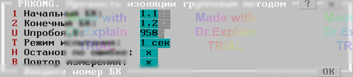

3.3 Прочность изоляции коммутатора групповым методом (PRKOMG)
Тест позволяет проверить прочность изоляции коммутатора переменным напряжением от 30 В до 950 (1500) В групповым методом.
Сначала появляется меню (см. PRKOMG, рисунок 1):

Параметры
- 1-ый БК — адрес начального блока каналов;
- 2-ой БК — адрес конечного блока каналов (для одного блока оба адреса должны совпадать);
- Uпробоя, В — задаваемое пробойное напряжение;
- Режим испытания — «1 сек» или «1 мин».
Алгоритм проверки
Подготовка
- Включить питание ППУ.
- Установить режим ППУ, контролировать напряжение на вольтметре.
- Запустить ППУ и проверить отсутствие связи между шинами A1 и B1, к которым не подключены точки. При замыкании выдаётся сообщение «Замыкание шин A1 и B1» и тест прерывается.
Групповые разбиения
Для каждого блока каналов из заданного диапазона выполняется цикл:
- Точки текущего разбиения подключаются к шине A1, остальные — к шине B1.
- Запустить ППУ и проверить отсутствие связи. При наличии связи — сообщение «Пробой».
Во время каждого шага выводятся строки вида:
$TST1 БК1.1 РГВ=FEh 1111110
— где FEh — шестнадцатеричный, а
1111110 — двоичный код разбиения (нулевой бит
соответствует анализируемому каналу).
По окончании всех разбиений появляется итоговое меню (см. п. 6.3).